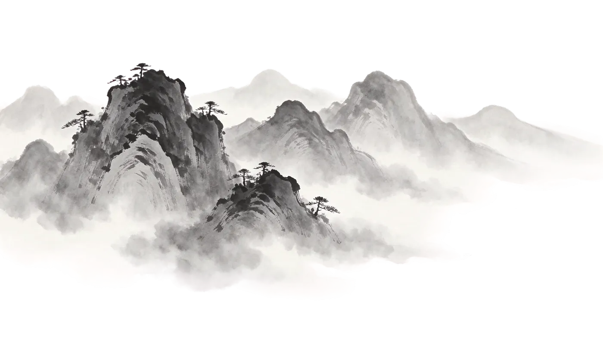

壹
一枝春
新品发布前夜，她的样衣被人剪破；她用外婆教的苏绣，把破口绣成一枝海棠。为女装品牌写的短剧：裙子就是剧情，结尾留钩子。
- 看点
- 剪破、连夜补绣、出场、当面对质，四场戏一场一个转折
- 画面
- 夜戏一盏暖灯，园林晨光清透；藕粉裙与海棠刺绣贯穿全片
AIGC 视频 · 短剧 · 品牌广告

新品发布前夜，她的样衣被人剪破；她用外婆教的苏绣，把破口绣成一枝海棠。为女装品牌写的短剧：裙子就是剧情，结尾留钩子。
为一把休闲转椅写的生活化故事：纱帘、海光、毛衣的手感。用材质特写和自然光讲产品，不靠口号。
第一人称穿过地下水域与古堡，串起多场人物对手戏。从片头到结尾一整集，考的是长片里人物、空间和声音的连续。
偷吃、装睡、揭晓，十五秒讲完一个小反转。同系列账号作品单条最高播放 290 万，另有一条 210 万。
我做 AIGC 视频：拿到脚本，独立交出成片。人物与场景资产、分镜提示词、生成、剪辑、配乐、字幕，一条线自己走完。
数据分析出身，习惯把手艺拆成流程。常用的写法和检查步骤都沉淀成了可复用的工作流，换一个题材、换一个品牌，也能稳定出片。
偏爱国风与写实质感，在意镜头之间的呼吸。